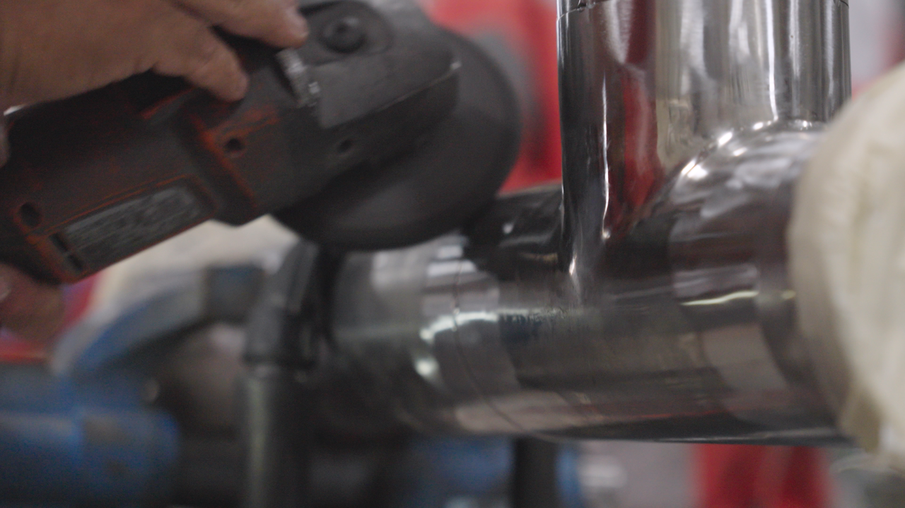
Fabrication and assembly
Tailored solutions for industrial installations and equipment.
- Pipework and boilermaking
- Metalwork and specialist welding
- Custom fabrication and assembly
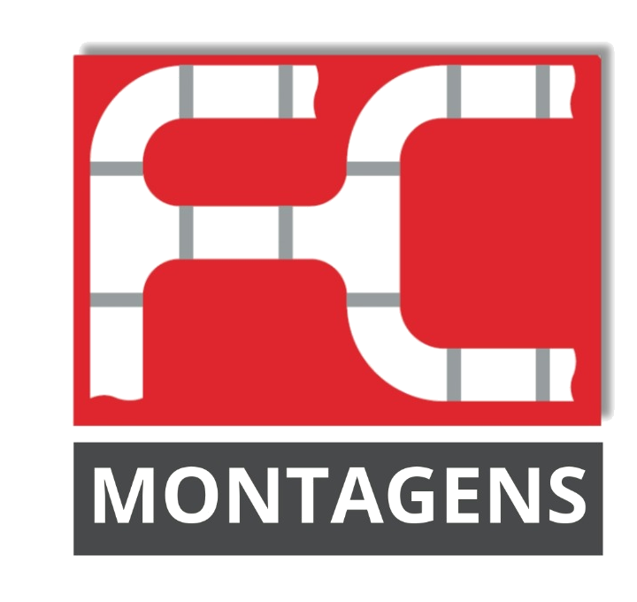
Est. 2018
Fabrication, assembly and maintenance of pipework, steel structures and industrial equipment.
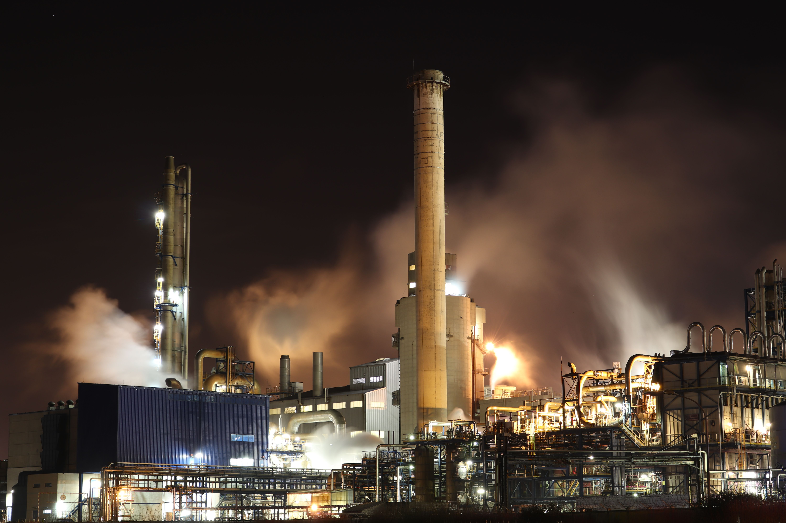
Services

Tailored solutions for industrial installations and equipment.
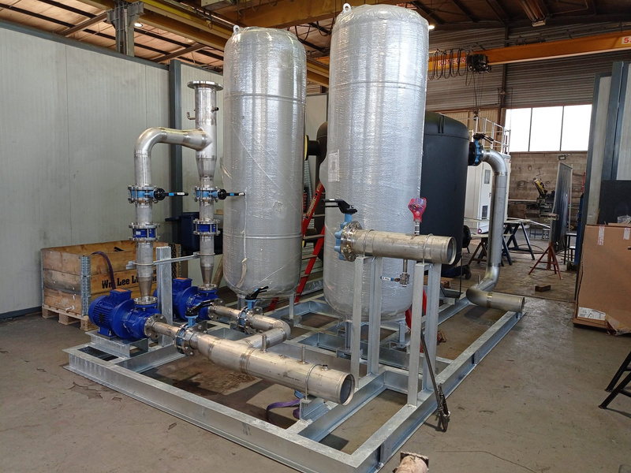
Equipment support throughout its working life.
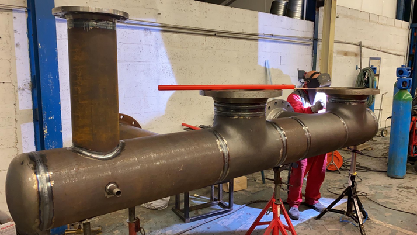
Work on installations and equipment during planned shutdowns or in emergencies.
Pipework, equipment and fabrication details: a selection from the FC Montagens portfolio.
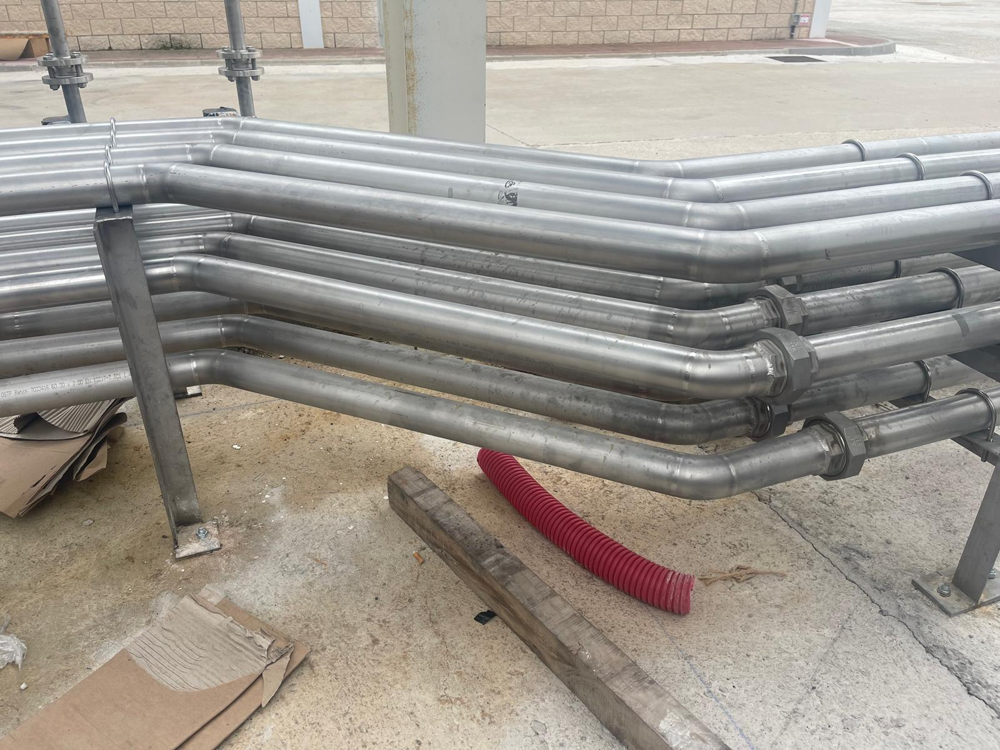
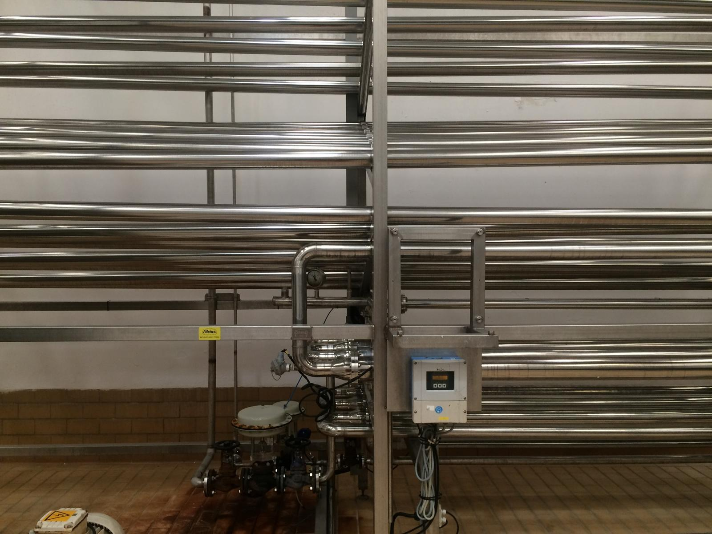
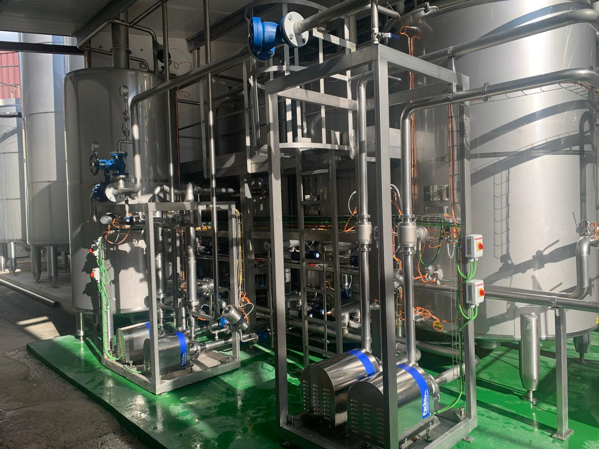
Selected images of fabrication, assembly and installations.
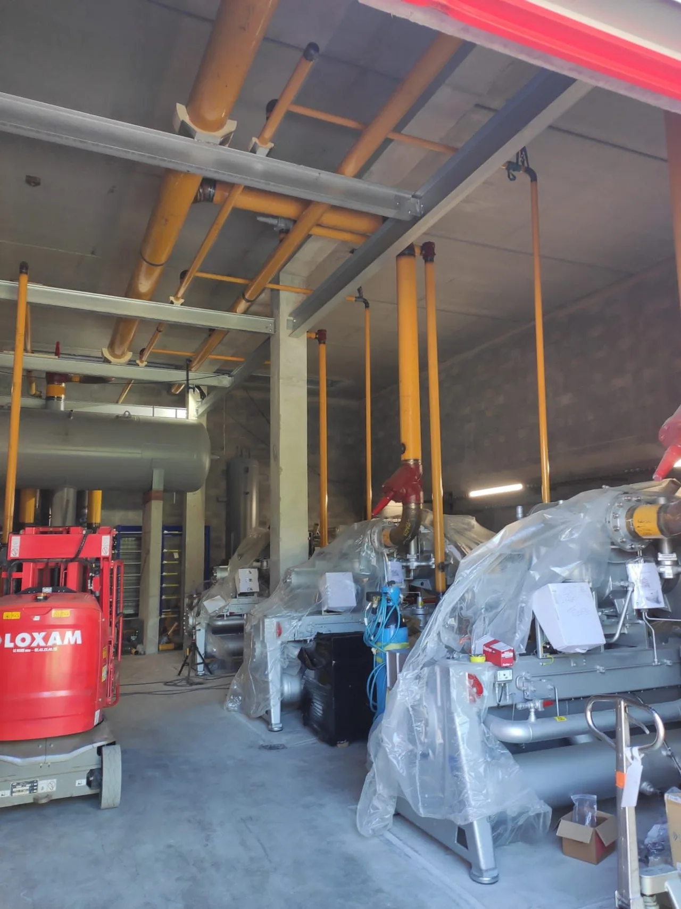
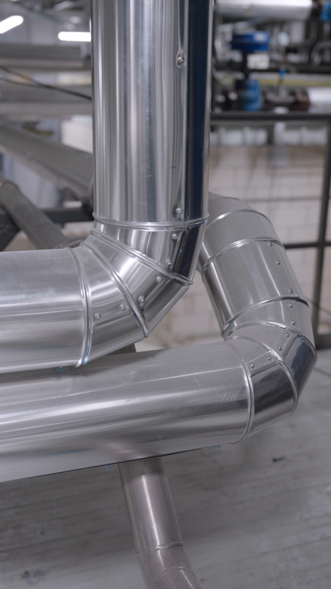
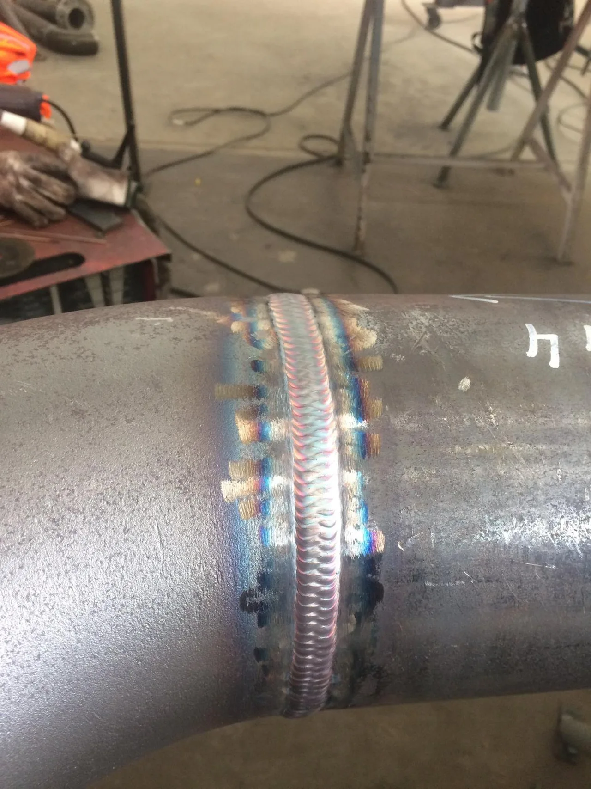
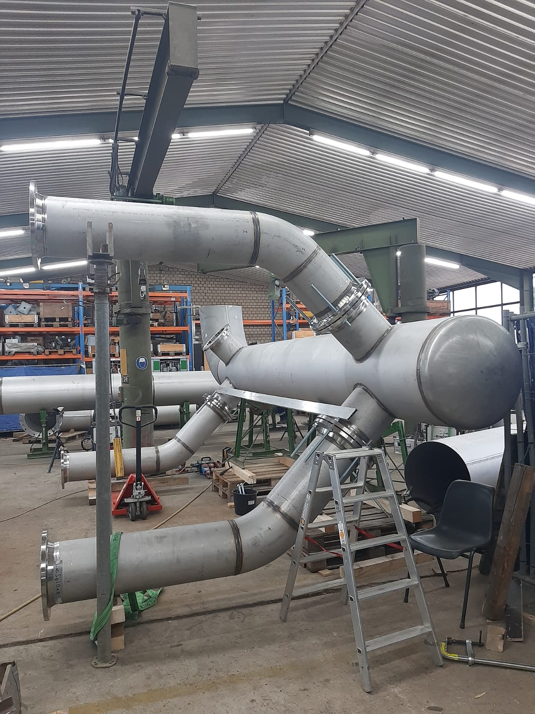
A selection from our industrial fabrication, assembly and maintenance portfolio.
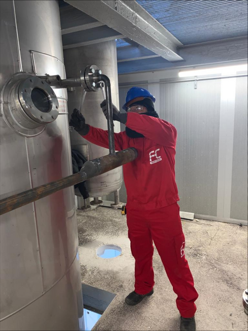
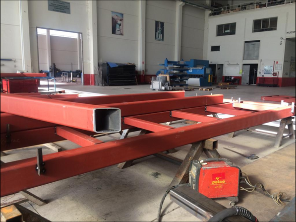
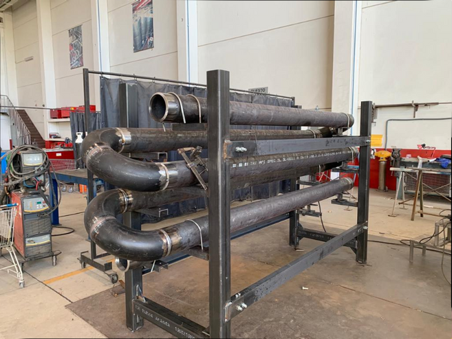
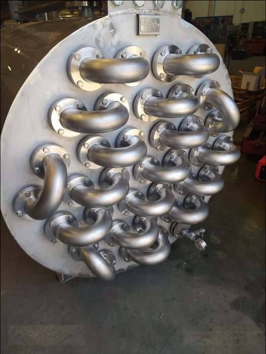
Company
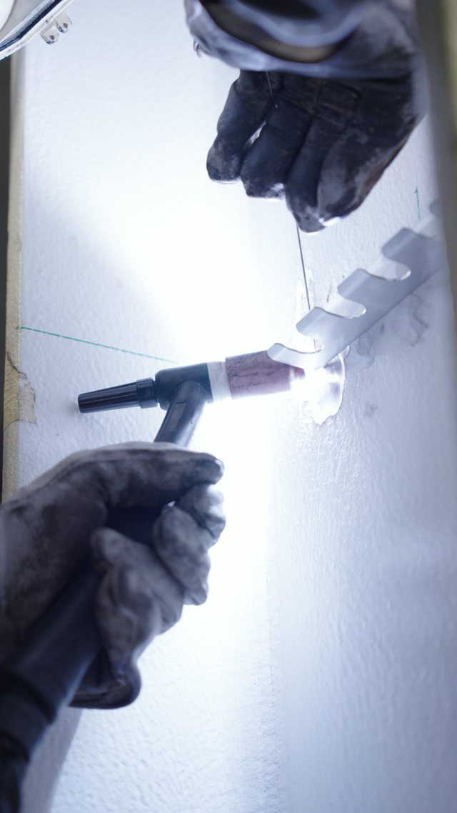
Founded in 2018 and based in Matosinhos, FC Montagens provides industrial fabrication, assembly and maintenance services internationally.
We were established to meet industrial assembly and maintenance needs. Our team brings together professionals from different trades to work on installations and equipment.
Tell us about your projectTo be our clients’ first choice for industrial assembly and maintenance, combining our team’s expertise with a commitment to quality. To keep growing and serve a wider range of industries and challenges.
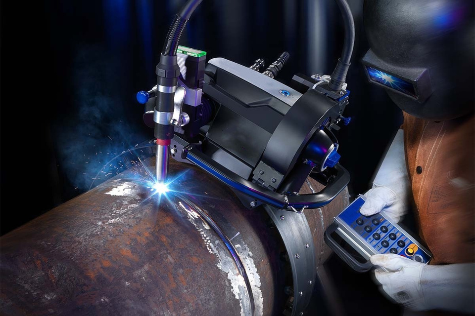
Equipment and technology
Orbital welding is part of our pipework capabilities. We use a mechanised system with control over welding parameters.
Tell us about your installation requirements so we can assess the right solution for the work.
Request a quoteContact
Describe the work, location and proposed dates. To send drawings or photographs, contact us by email.